9 renders | 4 Kontext edits on real helicopter photos + 5 Schnell concepts | Review batch
Before / After — Real Photos Transformed
Full Site Aerial
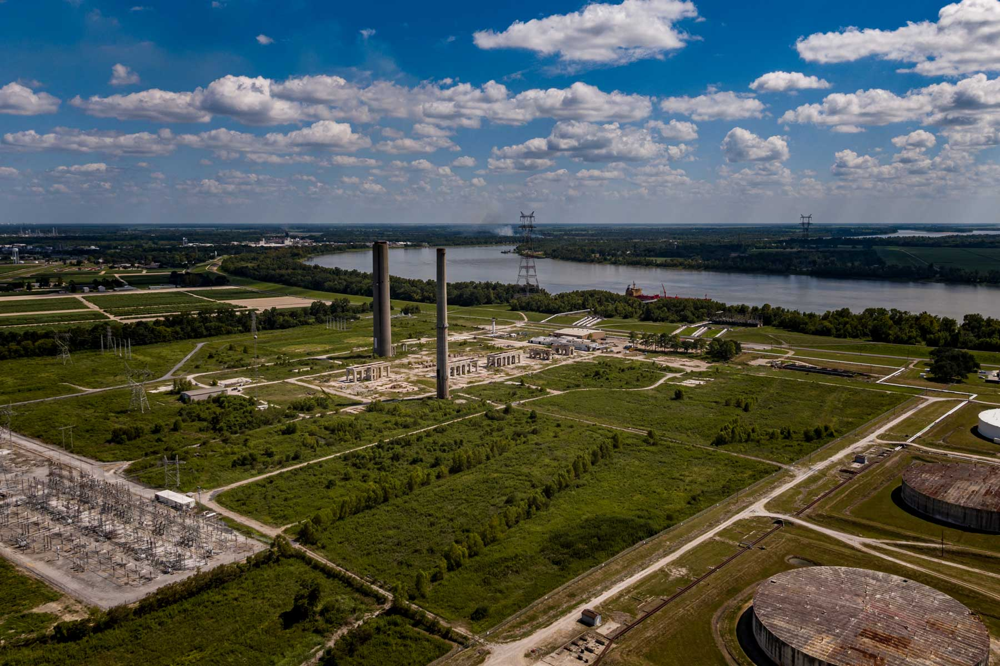
Before — Decommissioned (2023)
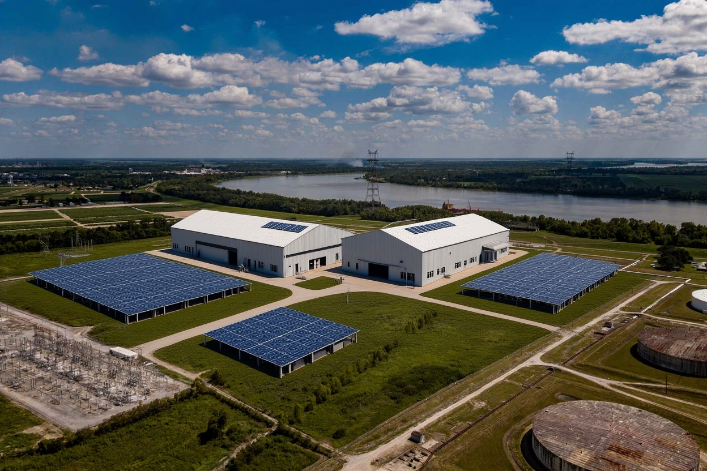
After — Tiger Compute Campus
Campus Overview — Angle 2
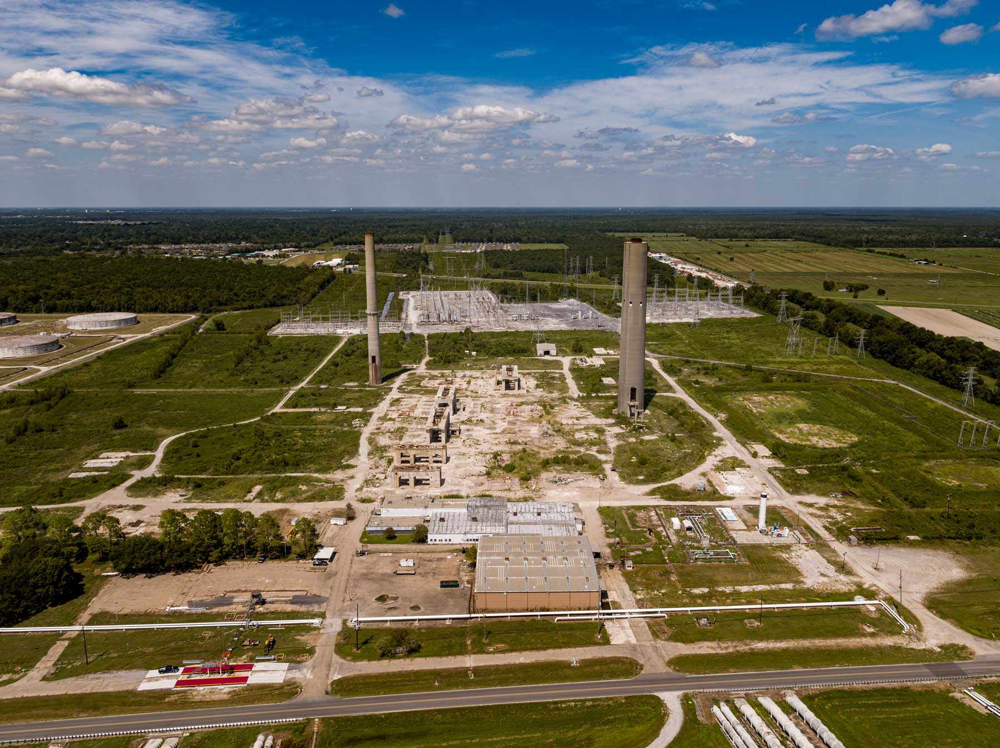
Before — Decommissioned (2023)
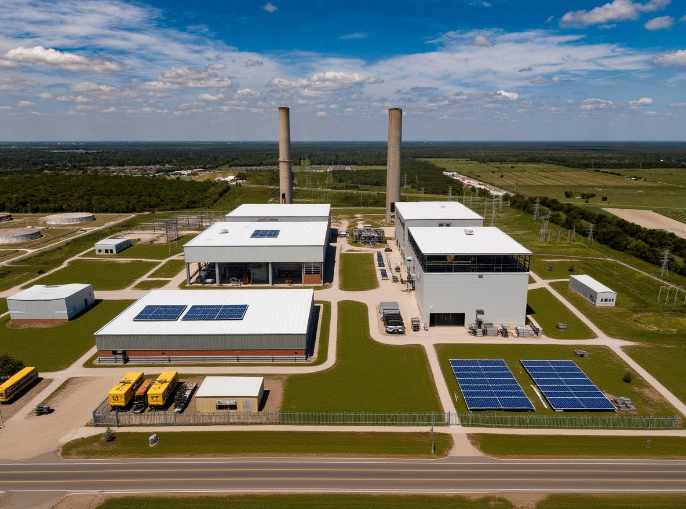
After — Tiger Compute Campus
Ground Level — Plant Transformation
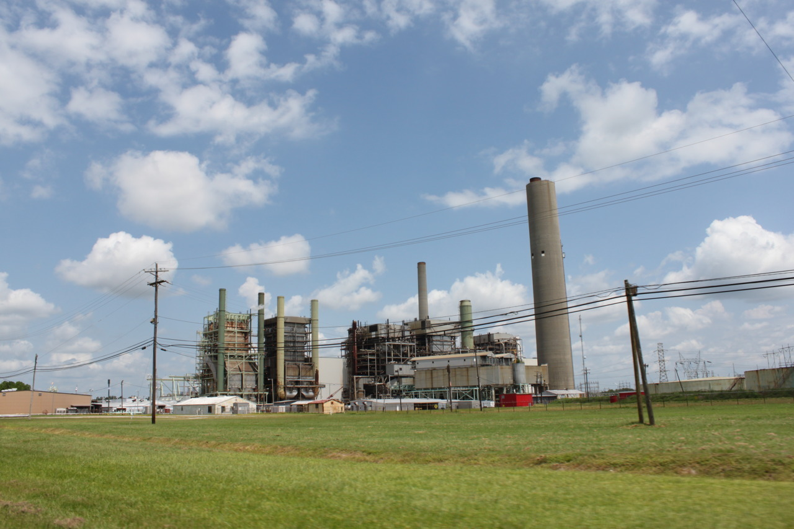
Before — Operating Power Plant
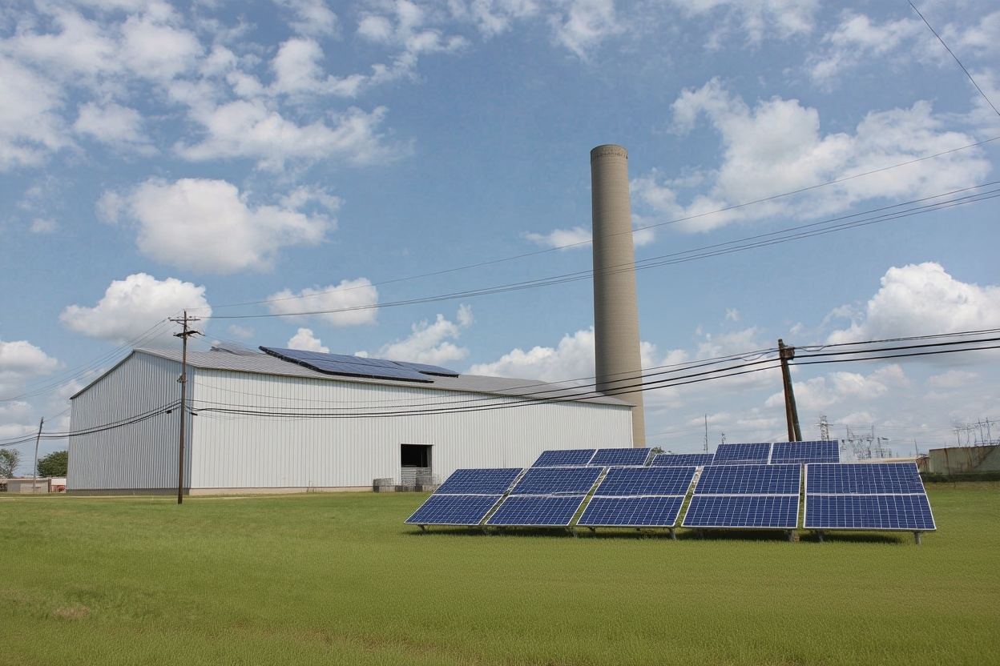
After — AI Factory + Solar
Mississippi River Dock
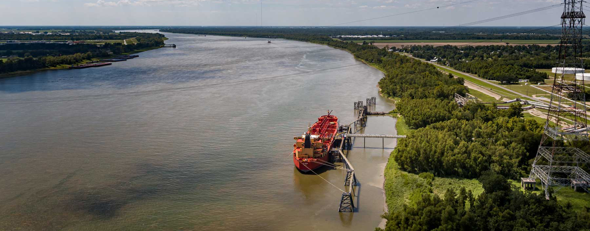
Before — Dock Only (2023)
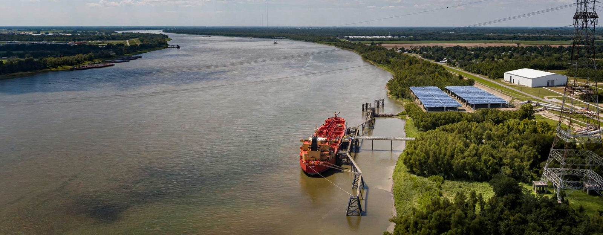
After — Dock + AI Campus
Concept Renders — What Goes Inside
Schnell Concept
GPU Compute Hall — Interior
Rows of liquid-cooled NVIDIA server racks with green LED status lights. Converted industrial warehouse with exposed steel beams and high ceilings. Technician in hard hat walking the aisle. This is what goes inside the buildings.
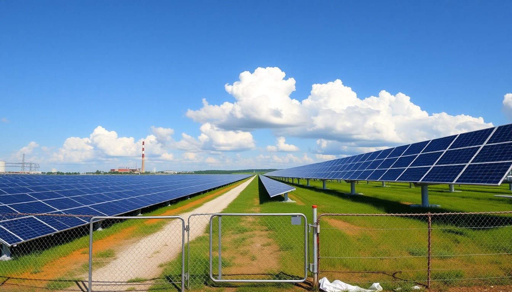
Schnell Concept
Ground-Mounted Solar Farm
400+ acres of First Solar Series 7 panels on flat Louisiana land. Gravel service road between rows. Smokestack visible in background. Chain-link perimeter fence. This fills the open acreage surrounding the AI factory buildings.
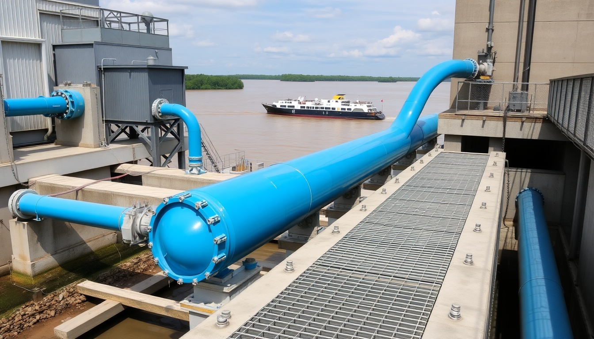
Schnell Concept
Mississippi River Cooling Infrastructure
Blue cooling water pipes running from the river pump house to the AI factory. Steel grating walkways, concrete intake structure. Mississippi River with barge traffic in background. 3,500 feet of river frontage = unlimited cooling capacity.
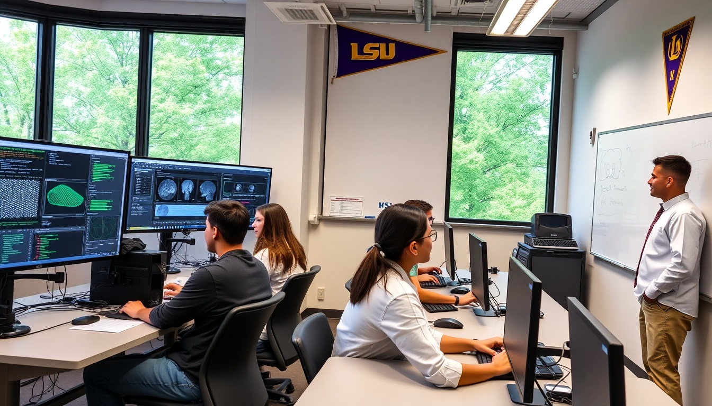
Schnell Concept
LSU AI Research Lab
LSU students and professor working with GPU workstations. Medical imaging and neural network code on screens. This is why we build it — so Louisiana's students have access to the same compute as MIT and Stanford. Geaux Tigers.
Source Photos — Real Helicopter Aerials (Aug 2023)
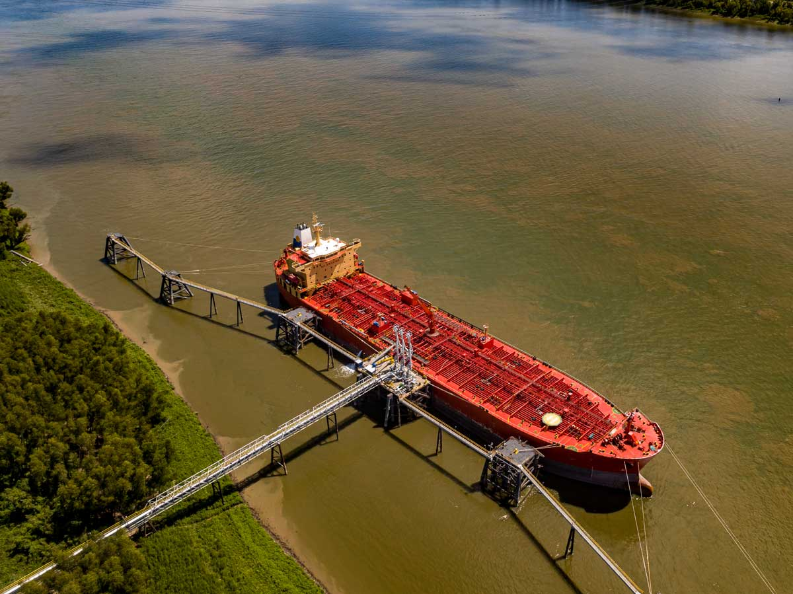
Deepwater Dock — 43 ft Low Water Depth
Red tanker at the Mississippi River dock. Two pier walkways. Oceangoing vessel capacity. 3,500 linear feet of river frontage.
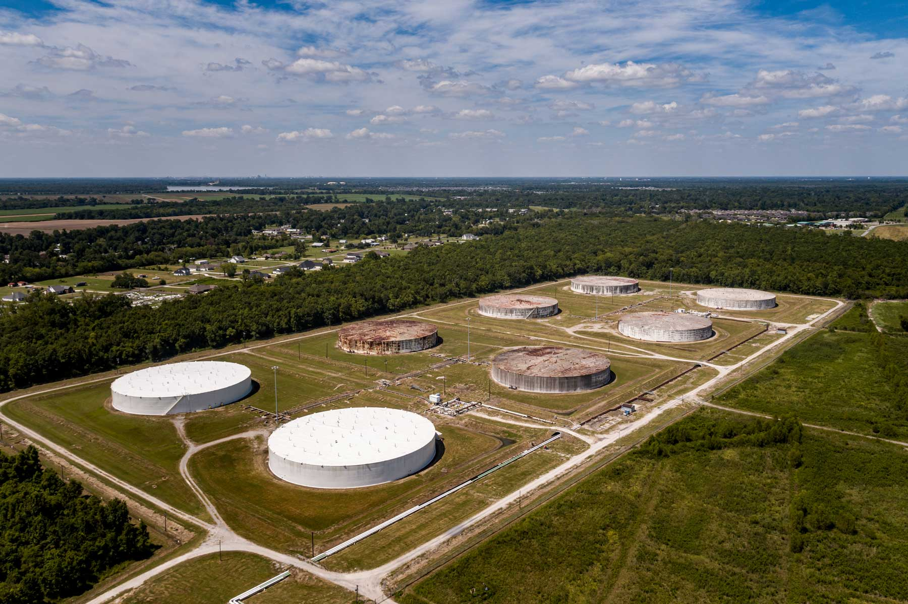
Tank Farm — 2.33 Million Barrels
8 large storage tanks. Currently operated by Willow Glen Terminal for bulk liquids. Heating, mixing, blending capabilities. 20,000 bbl/hr peak flow.
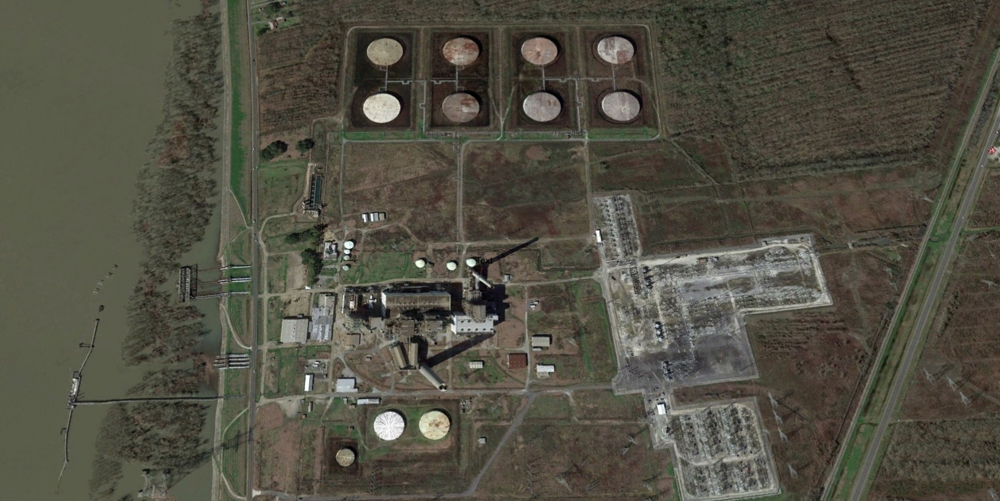
Satellite View — Pre-Demolition (2019)
All original power plant structures still standing. Mississippi River on left. Tank farm at top. Electrical substation (white grid pattern) on right. 700 acres total.
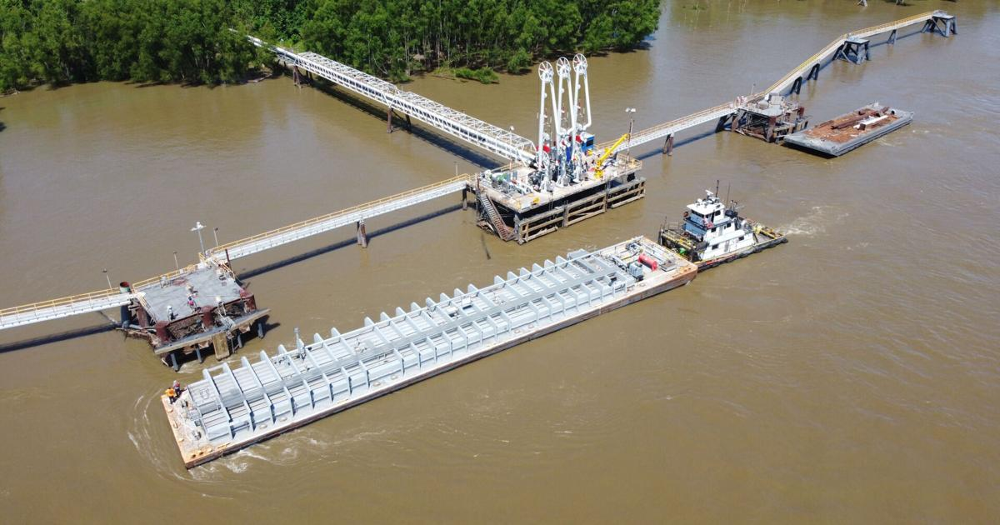
Barge Operations — Inaugural Shipment (2022)
Barge loading at the dock. Multi-modal logistics: river, rail (CN main line), pipeline corridor, highway (I-10 + LA-75).